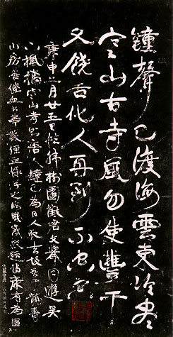

義助慰安婦 —— 李敖百件珍藏義賣藝術品（第30件） 品 名：B7. 康有為七絕拓片 預估價：4 萬 成交價：5 萬 說 明： 書法是中國藝術史一個重要的項目，但因寫在紙上或絹上，故不易流傳下來；書法流傳以前有很多碑留下來，刻字在石頭上保存的時間比較久，所以古人要刻碑，取得碑文的方法就是拓碑，收工好的拓出來的就很漂亮，手工不好的拓出來就不好。碑太舊了，經過多年的風吹雨打，拓碑的效果就會變得不好。這個碑是大書法家康有為寫的詩，因碑是新刻的，所以拓得好，是很難得的作品。 
書法是中國藝術史一個重要的項目，但因寫在紙上或絹上，故不易流傳下來；書法流傳以前有很多碑留下來，刻字在石頭上保存的時間比較久，所以古人要刻碑，取得碑文的方法就是拓碑，收工好的拓出來的就很漂亮，手工不好的拓出來就不好。碑太舊了，經過多年的風吹雨打，拓碑的效果就會變得不好。這個碑是大書法家康有為寫的詩，因碑是新刻的，所以拓得好，是很難得的作品。